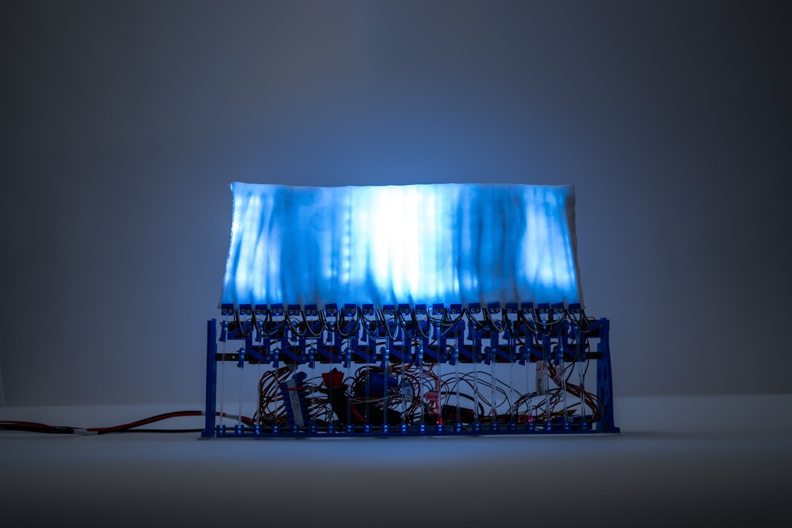
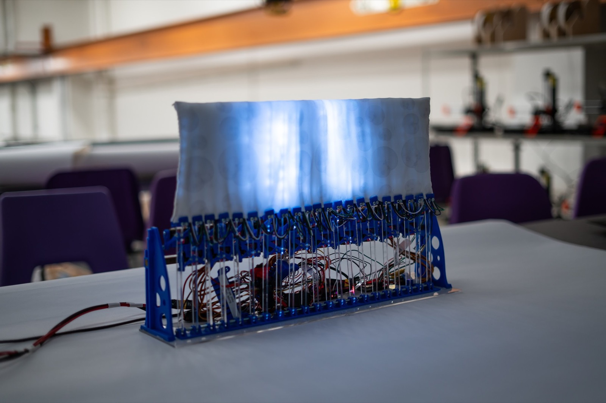
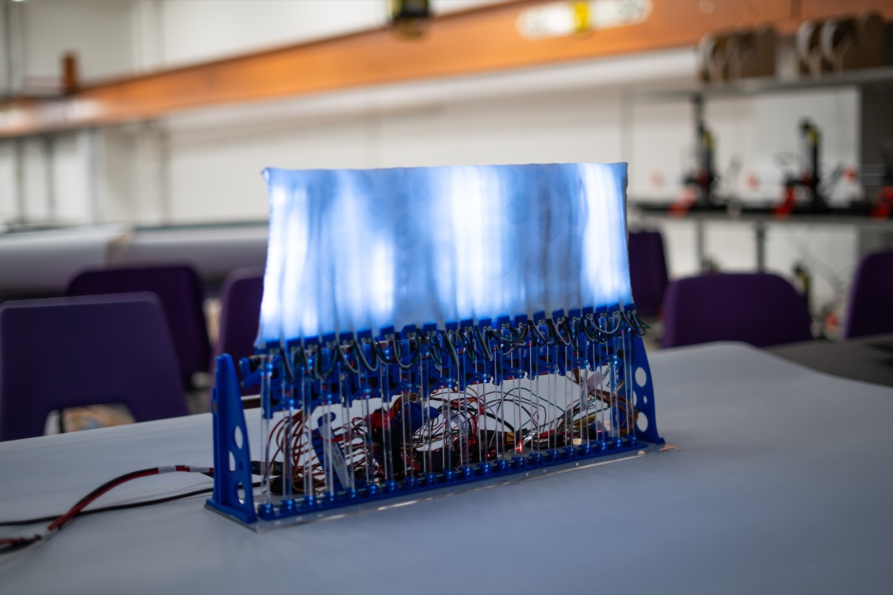
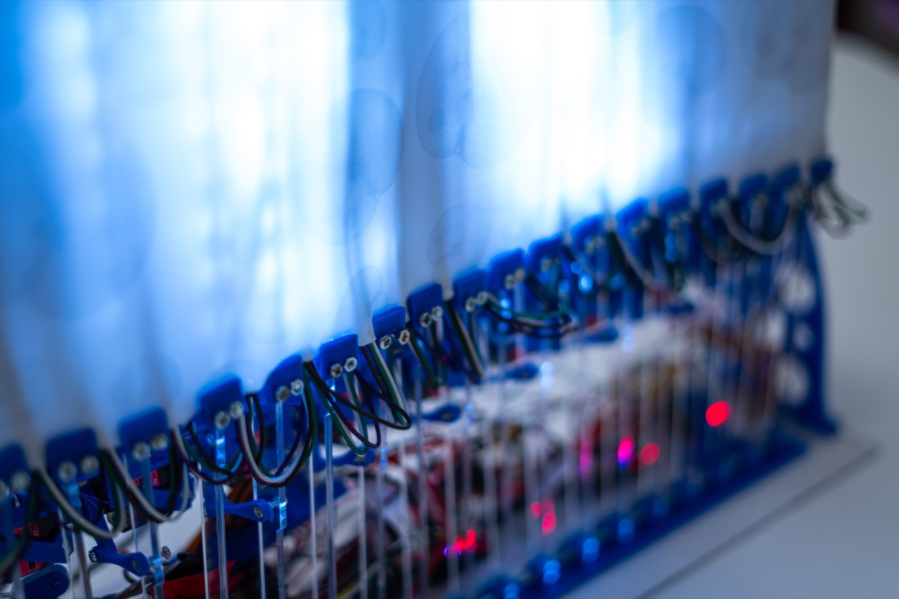
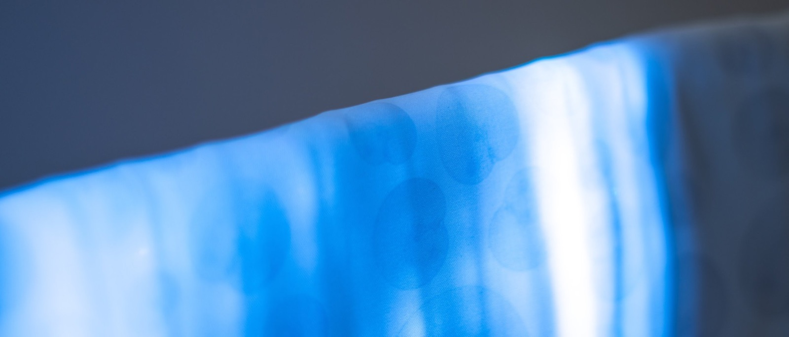
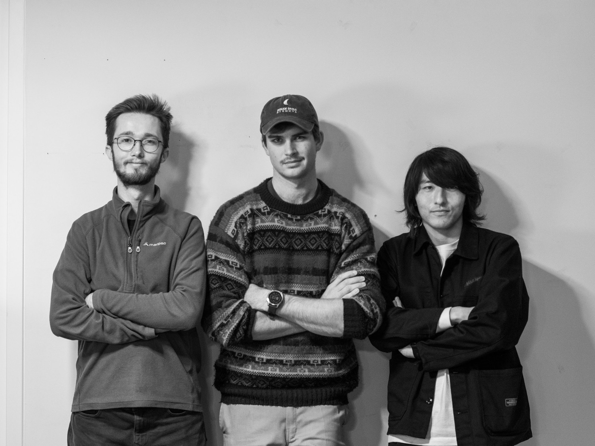

Kinetic Canvas
IDE Cyberphysical Systems / 2025






Kinetic Canvas is a moving sculpture. An array of servo motors pushes a fabric surface through mechanical linkages, creating flowing patterns of light and shadow. I designed the mechanical system, wrote the control software with the team, and built the brand identity around the project.
It won the Interplay competition and we pitched it commercially at PS Labs in Bermondsey.